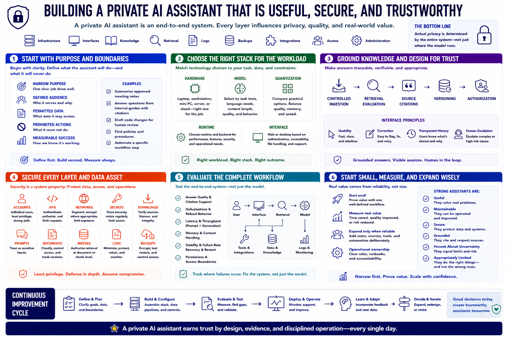

Course Summary and Key Takeaways
Connecting to LMS... Progress: in progress

Narration
A private AI assistant is an end-to-end system, not merely a local model. Infrastructure, interfaces, knowledge, retrieval, logs, backups, integrations, access, and administration determine its actual privacy.
Start with a narrow purpose, defined audience, permitted data, prohibited actions, and measurable success. Choose hardware, model, quantization, runtime, and interface according to that workload.
Ground private knowledge through controlled ingestion, retrieval evaluation, source citations, versioning, and authorization. Design the interface for usability, correction, transparent history, and human escalation.
Secure accounts, APIs, networks, secrets, downloads, prompts, documents, indexes, logs, and backups. Evaluate the complete workflow for quality, hallucination, latency, memory, stability, permission, and recovery.
Start small, measure real value, and expand only when the assistant reliably helps. Strong assistants are useful, maintainable, secure, grounded, honest about uncertainty, and appropriately limited.